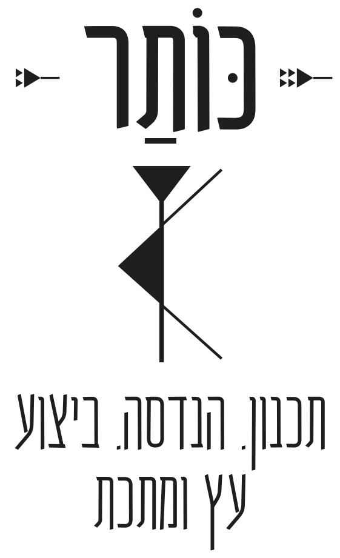
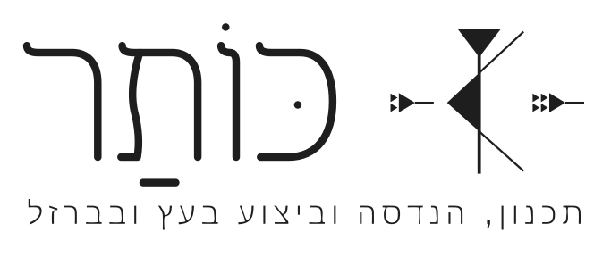
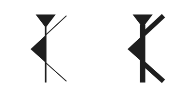

מסמך מותג · עודכן 2026-11-02
כותר
כל מה שהוחלט על השם, על משפט המהות ועל הלוגו, במקום אחד.
הלוגו נסגר ב-2026-11-02. הקבצים ב-logo-web
1השם
עד ההשקה, כל מה שעולה לאוויר נושא את השם "באים בטוב". בפרופיל בגוגל ובוואטסאפ השם הוא "כותר" בלבד, בלי KOTHAR ובלי שורת התיאור. לא מציגים ® עד שסימן המסחר נרשם.
2משפט המהות
- המותג אומר מי אנחנו, במשפט הזה. הוא שורת התיאור באתר ובפרופיל, והוא כתוב בתחתית החותם.
- הלקוח נכנס דרך המוצר: פרגולה, דק, גלריה, מבנה עץ, עבודת ברזל. המוצר הוא הכותרת של כל דף ומודעה.
- המכלול הוא הסיבה לבחור בנו, לא הכותרת: תכנון, אישור קונסטרוקטור וביצוע, בכתובת אחת.
- ברזל: לא טוענים לפרויקט ברזל שאינו רשום בעובדות של העסק.
חדשהלוגו הסופי, 2026-11-02
בלי עיגול. "כותר" מלא עם ניקוד, וה-ת' ביתדות כסמל. שתי גרסאות: העומדת לתמונות, והאופקית לאתר ולמסמכים. כל הקבצים והוראות ההטמעה ב-logo-web. הסעיפים שלמטה מתארים את הסבב הקודם.
logo-stack-black.svglogo-row-black.svglogo-header-black.svglogo-header-phone-black.svglogo-row-small-black.svg3הלוגו המוביל בסבב הקודם
הסמל הוא האות ת' ביתדות, בכתב של אוגרית: עמוד עם כותרת. משמאל לו כ' ומימין ר', באותו כתב, כך שהסמל לבד אומר "כותר". זו הגרסה העדינה, בקו דק.

kothar-seal-v6-fine-kr.svg
kothar-symbol-v6-fine-kr.svg
kothar-horizontal-v6-fine-kr.svgכך זה נראה בראש חשבונית
4על רקע כהה

kothar-seal-v6-fine-kr-white.svg
kothar-symbol-v6-fine-kr-white.svgkothar-horizontal-v6-fine-kr-white.svg5גרסאות לגדלים קטנים ולצריבה
הקו הדק והיתדות הקטנות לא מחזיקים מתחת ל-64 פיקסלים, בצריבה על עץ ובחיתוך לייזר. לשם יש גרסה בקו עבה, בלי ה-כ' וה-ר'.
kothar-symbol-v6.svg
kothar-seal-v6.svg
kothar-horizontal-v6.svgהסמל בגדלים קטנים
64, עם כ' ו-ר'6מה משתמשים איפה
| איפה | איזו גרסה | גודל מינימלי |
|---|---|---|
| חשבונית, הצעת מחיר | אופקי עם שורת התיאור | גובה 2.5 ס"מ |
| ראש האתר, מחשב | אופקי עם שורת התיאור | גובה 80 פיקסלים |
| ראש האתר, נייד | אופקי, קו עבה, בלי שורת תיאור | גובה 32 פיקסלים |
| תמונה ראשית באתר, שלט, דפוס | חותם עדין עם כ' ו-ר' | קוטר 8 ס"מ |
| אייקון בדפדפן, פרופיל בוואטסאפ, ברשתות ובגוגל | סמל, קו עבה | 16 פיקסלים |
| חתימה במייל, מצגת, עמוד אודות | סמל עדין עם כ' ו-ר' | 64 פיקסלים |
| צריבה על עץ, חיתוך בפלדה, חותמת | חותם, קו עבה | לפי בדיקת הצריבה |
| צילום, ביגוד, רקע כהה | הגרסה הלבנה של אותו שימוש | כמו בשורה המקבילה |
7צבעים
שחור-לבן בלבד, כדי שהלוגו יעבוד בצריבה, בחיתוך ובחותמת. פלטה מורחבת אחרי ההשקה.
#1E1E1E#FFFFFF8מה עוד פתוח
- אישור סופי של הלוגו עד 2026-11-05, ובדיקת צריבה עם יהודה עד 2026-11-10.
- קובצי PNG ואייקונים לדפדפן מכל הגרסאות, אחרי האישור.
- הנרטיב של "למה כותר" נכתב מחדש. עד שהוא מאושר, הבלוק לא עולה לאתר.
- סימן מסחר: סימן מילולי "כותר" בסוגים 37 ו-42, על שם שני השותפים. ההגשה ב-2026-11-11.
נספחסבב התיקונים מול v5
- עובי קו בסמל: בגרסת הקו העבה העמוד והזרועות עובו, כדי שיחזיקו מול המשולשים המלאים בגדלים קטנים ובצריבה. הגרסה העדינה שומרת על העובי של v5.
- אחידות האותיות: לכל האותיות אותו "דגל" בפתיחה ואותה כתף, ה-ו׳ ירדה לקו העליון המשותף, ה-ר׳ קיבלה רגל ישרה, והרווחים שווים.
- ת׳ שלא נראית כמו מ׳: הרגל הימנית יורדת ישר, והעקב נשאר רק ברגל השמאלית.
- ניקוד: כּוֹתַר, בכל גרסה שיש בה אותיות. נוסף דגש ב-כּ, שהיה חסר ב-v5.
- הטקסט המעגלי: שורת התיאור במקום "תכנון הנדסי · ניהול · ביצוע · עץ וברזל", באותן אותיות ובאותם ריווחים, גדול בכ-17%. הפסיק נבנה מהנקודה של v5.
- כ׳ ו-ר׳ ביתדות: משני צדי ה-ת׳, והקצוות שלהן בקו אחד עם תחילת המשפט המעגלי וסופו.

הדמיית צריבה על עץ
הדמיה בדפדפן בלבד, של החותם בקו העבה. הבדיקה האמיתית היא הדפסה בגודל אמיתי על עץ, עד 2026-11-10.
עובי הסמל, v5 מול הקו העבה

משמאל v5, מימין הקו העבה.
עוד גרסאות בתיקייה
החותם והאופקי העדינים בלי כ׳ ו-ר׳ (kothar-seal-v6-fine.svg, kothar-horizontal-v6-fine.svg), והגרסאות הלבנות של הקו העבה. הם נשארים כגיבוי.